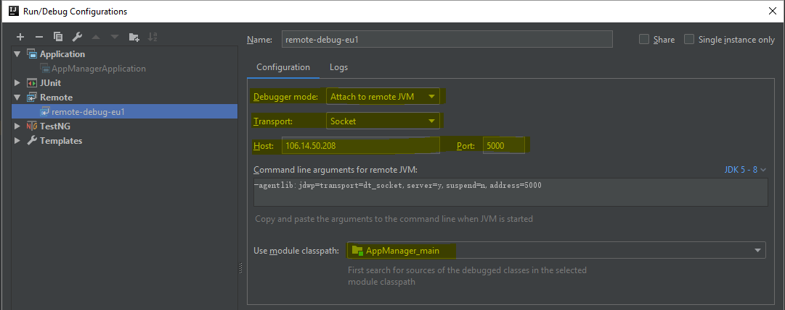

Remote Debug K8s Java Application
This page provide a way to using IDEA detach debug mode to debug java application that runs on Alibaba K8s cluster.
Recommended Way
- Install kubectl, get kubeconfig and write to file
~/.kube/config, then we can get the cluster information by command$ kubectl cluster-info$ curl -LO https://storage.googleapis.com/kubernetes-release/release/v1.12.0/bin/windows/amd64/kubectl.exe From IDEA, create remote debug attaching to
localhost:<port>, you will get JDK5~8 command line arguments-agentlib:jdwp=transport=dt_socket,server=y,suspend=n,address=9090Update Dockerfile to add arguments
FROM openjdk:8-jdk-alpine ARG JAVA_ENABLE_DEBUG=false ENV JAVA_ENABLE_DEBUG ${JAVA_ENABLE_DEBUG} ADD ./dockerdemo-0.0.1-SNAPSHOT.jar demo.jar ENTRYPOINT if [ "${JAVA_ENABLE_DEBUG}" = "true" ]; then \ java -agentlib:jdwp=transport=dt_socket,server=y,suspend=n,address=9090 -Djava.security.egd=file:/dev/./urandom -jar /demo.jar; \ else \ java -Djava.security.egd=file:/dev/./urandom -jar /demo.jar; \ fi EXPOSE 8080Update K8s Pod yaml file and add JAVA_ENABLE_DEBUG as true
ports: - containerPort: 5000 protocol: TCP - containerPort: 9090 name: jvm-debug protocol: TCP
Getting pod status by
$ kubectl get pod [-o wide], and forward local port to remote port by running$ kubectl port-forward <pod> <localpot>:<remoteport>Run remote debug from IDEA, the message
Connected to the target VM, address: 'localhost:9090', transport: 'socket'means we can debug from IDEA now.
Another Way
open project configuration

add remote debug

made the settings as marked by yellow Host & Port is the IP address of the service external endpoints in k8s. 
get the "Command Line arguments for remote JVM" in above screenshot and put into your Dockerfile as below: CMD ["java","-jar","-agentlib:jdwp=transport=dt_socket,server=y,suspend=n,address=5000","-Djava.security.egd=file:/dev/./urandom","/devcockpitsvc-3.0.5.jar"]
build docker image and deploy.
(might needs)restart service in k8s
to restart service need to kill it
- start the remote debug task when your service starts to run, and you will see connected: